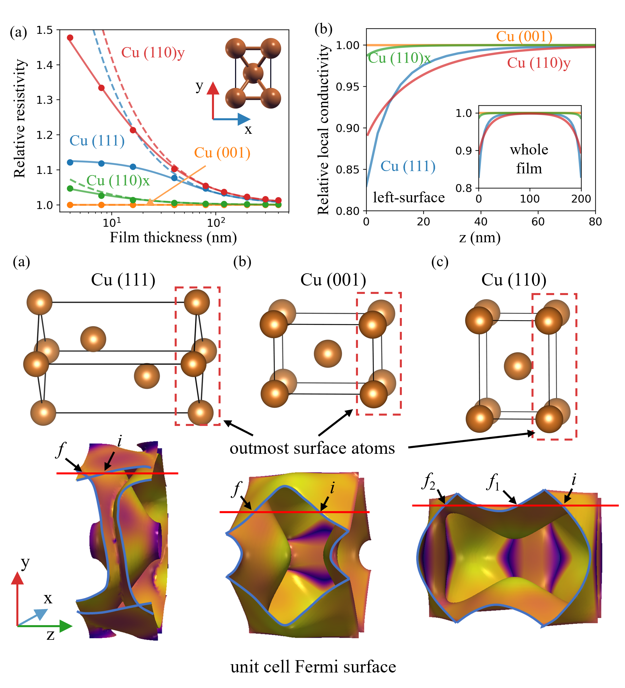
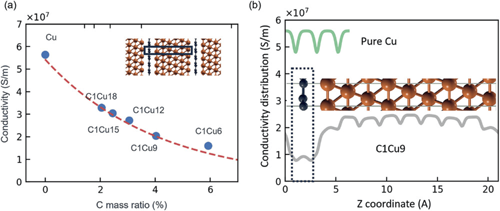

Electron-surface scattering is important to many transport phenomena and practical applications. Particularly, the downscaling of microelectronics demands higher electrical conductivity for interconnects, which are currently based on Cu that suffers from strong surface scattering. However, much is still unclear, such as which surface orientation causes a stronger scattering. Existing theories require phenomenological parameters, whose values are unknown unless fitting to experimental data or making assumptions, thereby limiting their accuracy and predictive power. Here we present an accurate, parameter-free approach that enables accurate calculation of the electronic transport with surface scattering. Then we apply it to study the conductivities of Cu films with different surface orientations. Contrary to common belief that more compact surface should have higher conductivity, we find that (111) is less conductive than (001). This can be explained by the symmetry of electronic structure. Furthermore, we propose a phenomenological model that has a better fitting to the first-principles results than the conventional one. Our work offers insights into the electronic transport, and enables accurate calculation, understanding and prediction for a broad range of systems where surface scattering matters.

There is great interest in developing advanced electrical conductors with higher conductivity, lighter weight, and higher mechanical strength than copper (Cu). One promising candidate is copper-graphene (Cu-Gr) composite, which is hypothesized to have a higher electrical conductivity than Cu. In this work, it is shown that this is not true, supported by state-of-the-art first-principles calculations of electron transport. Particularly, contrary to the belief that graphene in the composite is more conductive than pristine Cu, it is less conductive due to increased scattering despite increased carrier concentration. On the other hand, it is found that compressive strain along the (111) plane increases the conductivity, which is confirmed experimentally, while tensile strain has little effect. The work offers new insights into understanding and developing advanced conductors.
[1] C. Zhang* and Y. Liu, Electron-Surface Scattering from First-Principles. ACS Nano 18, 27433 (2024).
[2] C. Zhang, Z. Xiao, R. Paddock, M. Cullinan, M. Tehrani, and Y. Liu, Effects of Graphene Doping on the Electrical Conductivity of Copper. Advanced Functional Materials (2024).